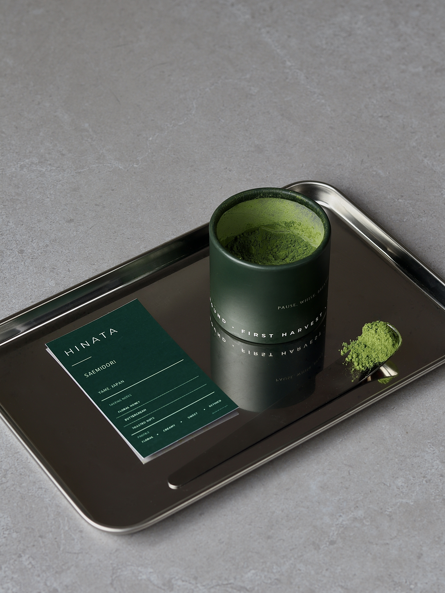

Japanese matcha · Yame, Japan
A little moment
of calm.
Discover thoughtfully sourced matcha, made for the everyday ritual of slowing down and savoring the moment.
Explore the collectionThe collection
Find your matcha.
Two expressions of Yame, Japan — each with its own character, crafted for your daily cup.
Aikō Matcha
Make room for a little ritual.
From the quiet tea fields of Yame to your favorite cup, we believe good matcha is an invitation to pause, reset, and enjoy the present.
Our story